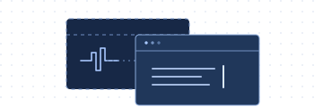

CtrlAltSpace
Speak, then press again.
The shortcut starts and stops dictation.
Press Ctrl+Alt+Space, speak, press again. The text
lands in the field you were already typing in. The provider's window never
appears on your desktop.
Three steps, right where you’re typing.
The shortcut starts and stops dictation.
The provider recognizes speech on a private display.

If delivery is uncertain, OyVoice returns the transcript for manual recovery.

No. The selected cloud provider recognizes the speech. The ChatGPT provider needs sign-in.
OyVoice refuses to insert into an unknown field. If delivery is uncertain, it reports it and leaves the transcript for manual recovery.
Google speech is experimental. Physical testing of live speech in Russian and English is still open.